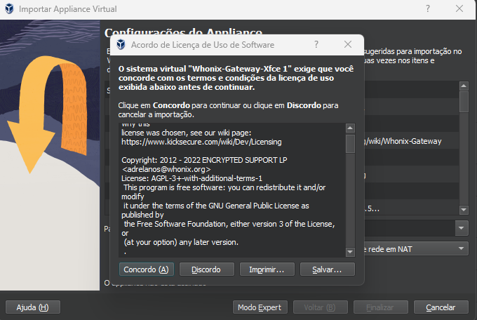
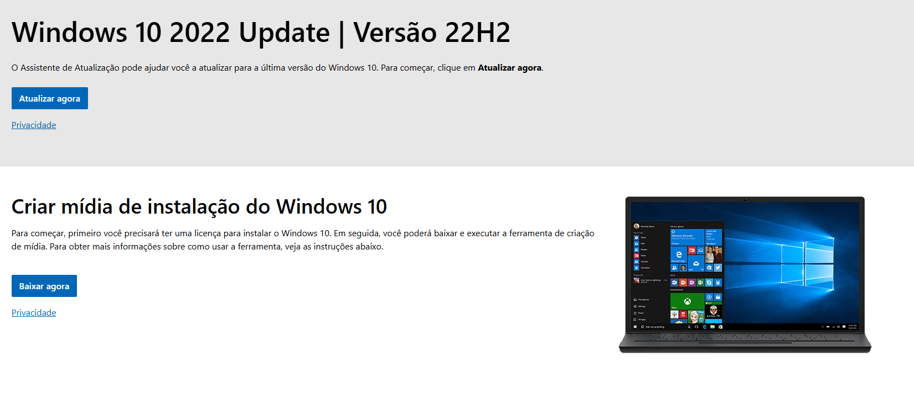
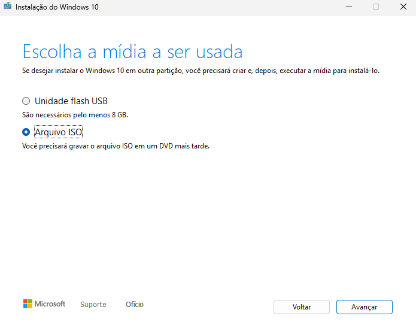
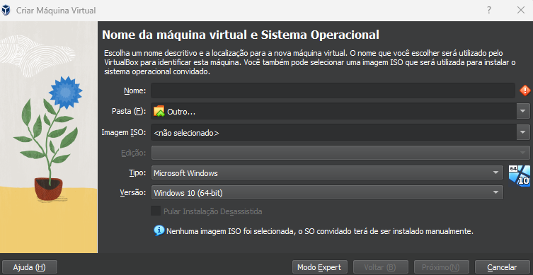
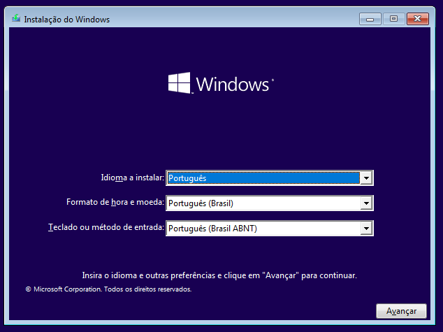
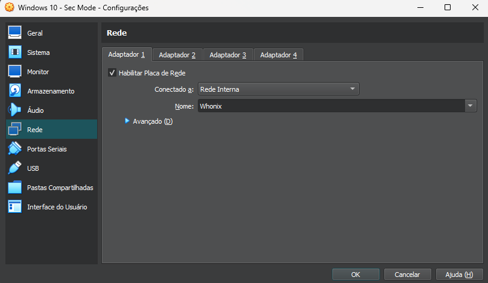
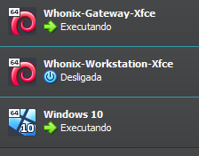
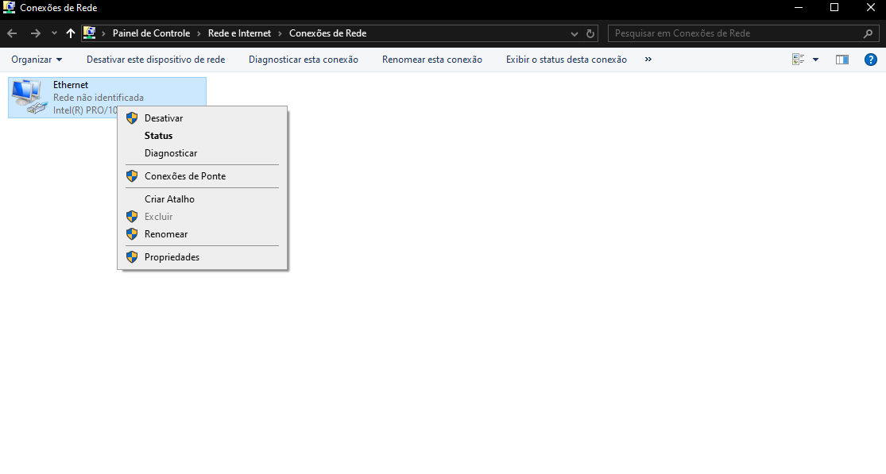

In an increasingly connected world, protecting online privacy has become essential, highlighting the
importance of seeking anonymity. Therefore, this article aims to address the configuration of a
virtualized Windows environment, in which all traffic is routed through the Tor network via
Whonix-Gateway, thus ensuring an additional layer of security and protection.
For this, VirtualBox, Windows 10, and Whonix will be used.
Concepts
Virtualization
Virtualization is a technology that allows creating virtual versions of computing resources, such as
operating systems, servers, or networks, on a single physical hardware. It uses a hypervisor to allocate
and manage these resources, allowing multiple virtual machines to operate independently and in isolation
on the same physical device.
*It is worth noting that virtualization and containerization are distinct concepts.
VirtualBox
VirtualBox is open-source virtualization software developed by Oracle, used to create and manage virtual
machines on operating systems such as Windows, Linux, and macOS, which become hosts for virtualized
entities. In summary, it allows the user to run multiple virtualized operating systems from a single
physical computer.
Whonix
Whonix is an operating system focused on anonymity and security, designed to protect the user's identity
online. It consists of two virtual machines: Whonix-Gateway, which routes all traffic through the Tor
network, and Whonix-Workstation, where applications are executed in isolation.
Tor Network
The Tor network (The Onion Router) is a communication network that allows anonymizing internet browsing
by routing data traffic through a series of nodes (servers) distributed globally. Communication is
encrypted in multiple layers, like the layers of an onion, ensuring that the origin, destination, and
content of the data are protected.
For creating websites on the Tor network, click
here.
Windows
Windows is an operating system developed by Microsoft, widely used on personal computers, corporate
systems, and servers. It provides a user-friendly graphical interface and essential tools that allow
users to interact with hardware, run programs, manage files, and connect to the internet.
Hands-on
VirtualBox Installation
First, for virtualization of the entire system, you need to install VirtualBox, using the official website. Choose the binary according
to the operating system installed on your physical machine (for example, the Windows hosts option for
Windows operating system users).

On the installation screen, select the recommended default components and agree to the "Network interfaces" warnings.
Whonix Installation
On the official website, download Whonix for
VirtualBox.
Then, after downloading, open the .ova file with a double-click, and do not change the default settings, also agreeing to the software license. 
After importing, you should have two new instances in VirtualBox (Whonix-Gateway-Xfce and
Whonix-Workstation-Xfce).

Then, start both machines. Initially, both instances perform a systemcheck to validate the installation.

Then, in the warning messages, select OK. In Whonix-Workstation, open the browser and access the site https://check.torproject.org/, which validates the
connection to the Tor network. After this action, shut down both virtual machines.

Windows Installation
On the official website,
download the Media Creator Tool from Microsoft.

Subsequently, with the tool initialized, choose to download the Windows ISO. 
In VirtualBox, create a virtual machine with the newly downloaded Windows 10 ISO. 
Then, proceed with the conventional installation. 
Windows 10 - Whonix Connection
After installing Windows on the virtual machine, in addition to properly updating the drivers and
operating system, shut down the instance. In the VirtualBox menu, on the newly created machine, choose
"Settings", and search for "Network". At this point, select "Internal Network".

After the previous configuration, run first the Whonix Gateway instance. Then, after its complete initialization, start the Windows virtual machine. 
When initializing Windows 10, in the control panel, choose Network and Internet > Network and Sharing Center > Change adapter settings. By right-clicking on Ethernet, select Properties 
Then, search for Internet Protocol Version 4 (TCP/IPv4). When you find it, select
Properties

Finally, select Use the following IP address, and set:
IP Address: 10.152.152.100
Subnet Mask: 255.0.0.0
Default Gateway: 10.152.152.10
Preferred DNS: 10.152.152.10
Then, click OK to save

Connection Test
For validation, in the browser, access https://whoer.net/. If all
previous steps have been successfully completed, the result of the site analysis will be an IP belonging
to the Tor network.

With this, you obtain a Windows environment where all its traffic is passed through the Tor network, natively.
Extras
- Using a VPN on the main operating system (host) can be extremely efficient, in order to add an extra
layer of anonymity and also prevent the internet provider from identifying constant use of Tor;
- Using privacy-focused extensions are great allies in the search for anonymity, such as: Privacy
Badger, Smart
HTTPS, uBlock
Origin and User-Agent
Switcher and Manager;
- For the national scenario (Brazil), I recommend reading the work OPSEC, Practical Cyber
Intelligence, by author Vinícius Vieira.